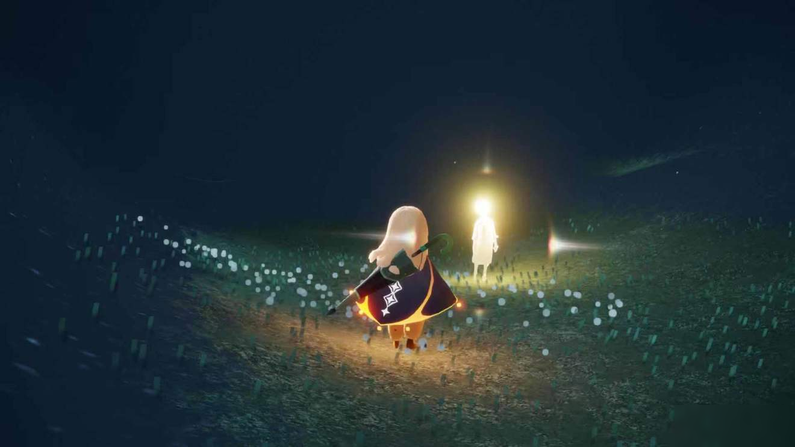
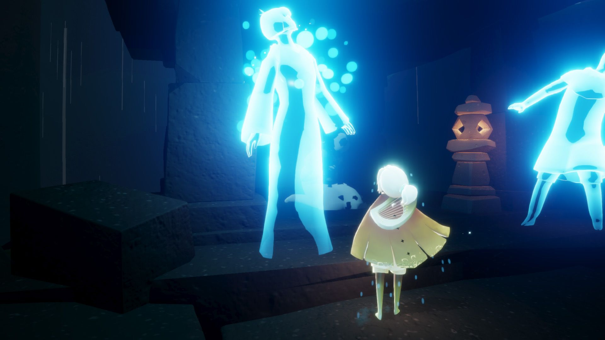
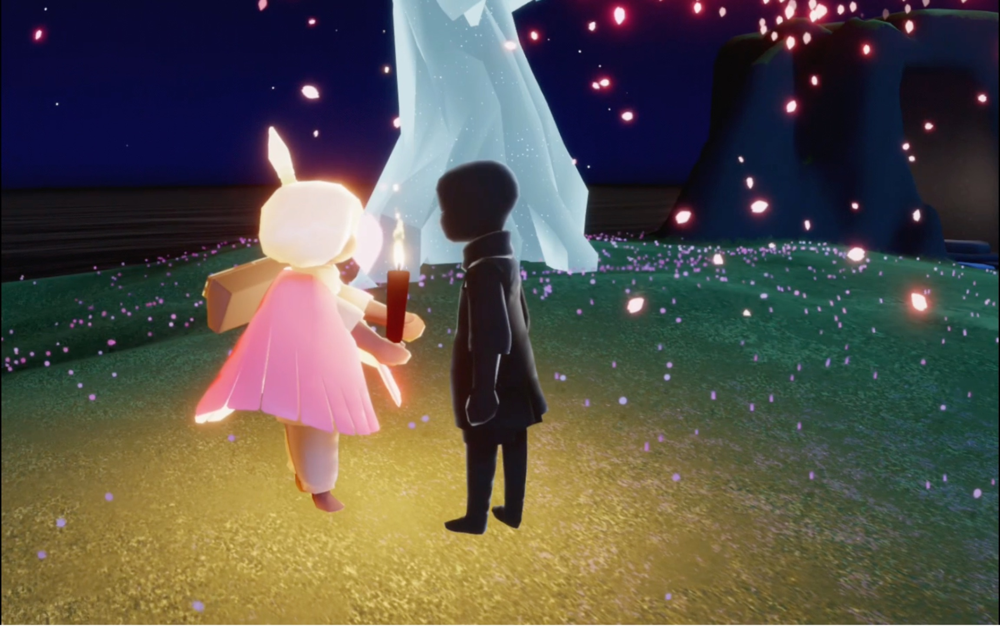
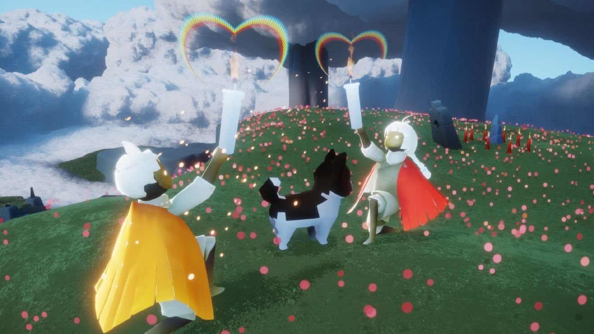
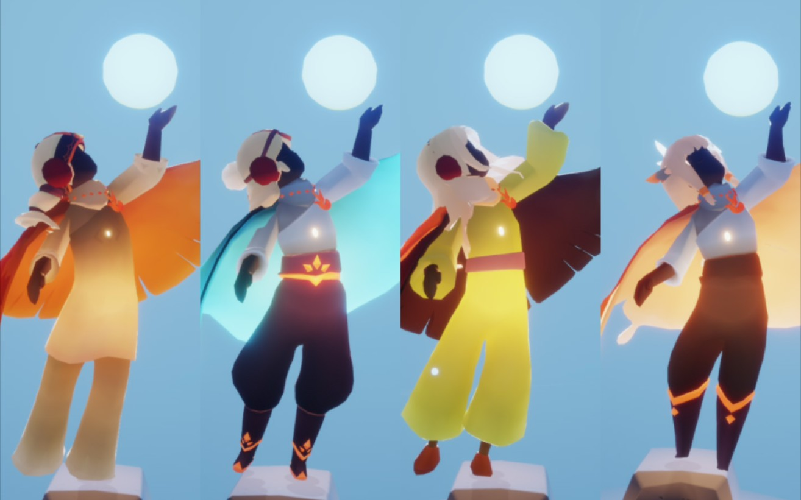
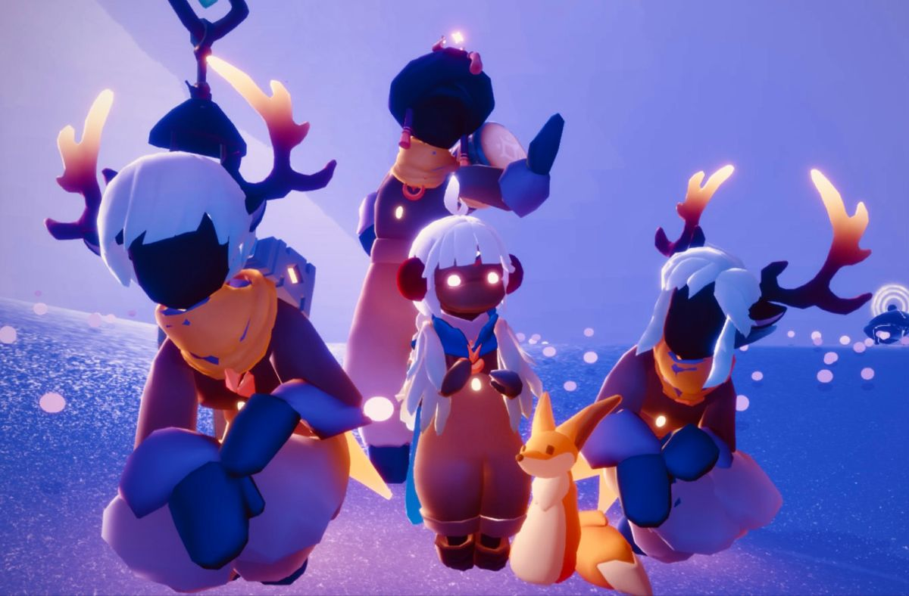

地圖中散佈著許多光之翼和先祖，找到光之翼可以提升翅膀等級，讓光之子可以飛行更久，從先祖得到的「動作」，可以增加表達方式，在地圖中有許多的蠟燭和燭光，得到蠟燭可以升級先祖，升級先祖可以得到人物的裝扮，裝扮包括：褲子和上衣、面具、髮型、斗篷，皆可更換。


交朋友在《Sky‧光遇》裡是很重要的存在，交朋友不僅僅可以拓展自己的交友圈，還可以從中了解人與人的溫暖，在《Sky‧光遇》裡，陌生玩家都是小黑人的存在，可以和對方互相點蠟燭就可以看見對方的模樣，最後再送給對方一個蠟燭，等待對方接受，就可以成為朋友了。


以下是人物裝扮或道具

